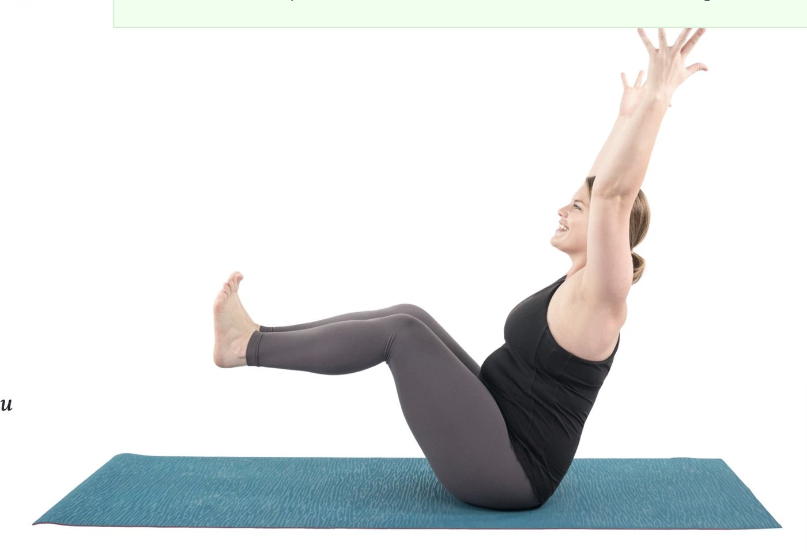
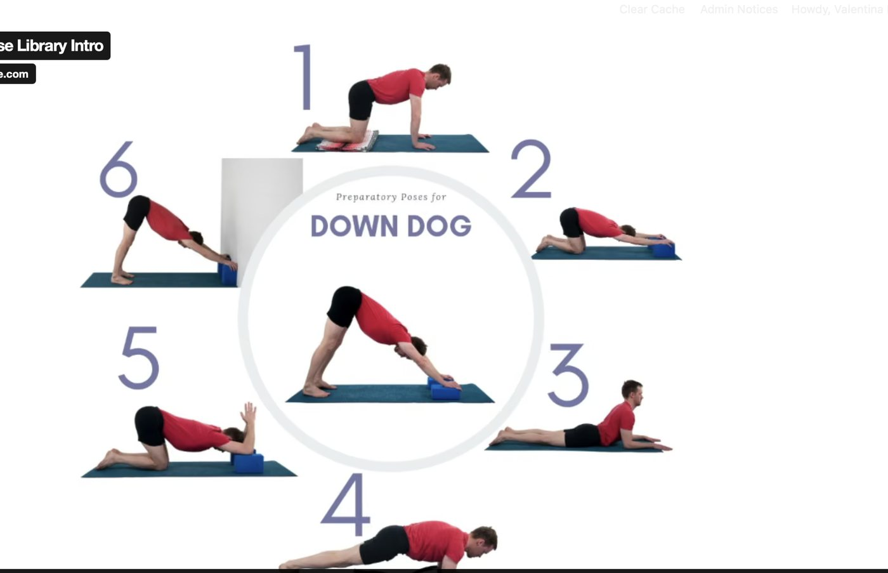

Yoga 2.0 Pose Library
Yoga For Every Body
"Yoga is not about touching your toes. It's about what you learn on the way down." — Judith Hanson Lasater
Yoga is not one-size-fits-all. Explore 1,000+ Yoga 2.0 pose variations to find out what works for YOUR body. Discover new ways to reap the many benefits of yoga.
Get a Free 7-Day Trial
Choose Among 1000s of Pose Modifications
Explore Yoga 2.0
Explore new variations of poses to connect more deeply with each asana and find greater ease and comfort in each pose.
Empower Change
You are unique. Your body is unique. Empower transformation by practicing in a way that works for YOUR body.
Embrace Peace
Experience the soothing calm of body and mind that is the hallmark of yoga asanas, when practiced with ease and mindfulness.
Try us free! Get a Sample Pose Report to experience the full benefits of the YogaU Pose Library.
Download a Free PoseWatch a preview
In-Depth Pose Analysis and Teaching Tips

Master Alignment
What are the most common alignment issues for each yoga pose? Learn how to observe and address them to stay safe in your practice.
Master Sequencing
How do you best prepare your body for each pose? Learn anatomy-based sequencing steps that systematically warm up your body.
Master Yoga Teaching
Becoming a sought-after yoga teacher doesn't just happen. Develop a master teacher repertoire of teaching skills and pose variations.
Questions?
FAQs
How do I personalize my practice?
Every pose in the Yoga 2.0 Library includes multiple variations with props and modifications, so you can choose the version that fits your body, level, and goals today.
What do I get when I sign up?
Full access to 1,000+ pose variations, in-depth alignment analysis, sequencing guidance, teaching tips, and video practice examples — starting with a free 7-day trial.
What are Yoga 2.0 poses?
Yoga 2.0 is our approach to making yoga fit YOUR body, not the other way around — classic asanas reimagined with variations for every level, age, and ability.
Is this for beginners too?
Absolutely. Every pose includes accessible starting variations and prep poses, so beginners can build a safe, confident practice from day one.
Can't find a certain pose?
Let us know! The library is always growing, and we prioritize new poses and variations based on what our members request.
Discover Yoga 2.0
Learn how to make yoga poses fit YOUR body, not the other way around. What's your yoga today? Explore 1,000+ pose variations to find the yoga that works for YOUR body!
Get a Free 7-Day TrialChair-supported Warrior variation